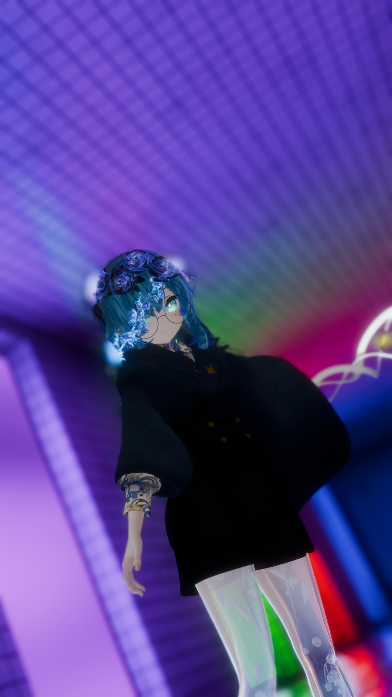

Profile

舞色 (MayI)
音と言葉と舞と光を武器に表現を突き詰める花の妖精・VTuber。
VRChatとリアルの両方で活動をしており、VR内では「パーティクル」や「シェーダー」、「オブジェクト」を使ったライブ演出の制作から、
ポエトリーを使った言葉の作品を披露しており、技術者とアーティストの二面性を持ったVTuberとして活動、
リアルでは、ダンサーとして様々なところで作品のお手伝いをしていたり、VTuberライブテクニカルスタッフとして裏方をしていたりと、
こちらでも技術者と表現者としての二面性を持った人としている。
ポチャッコをこよなく愛しており、座右の銘は「ポチャッコは人生、ポチャッコと一心同体。」と言われていたり言われていなかったり。
音ゲーが好きで、よく突発的に配信をしている。


Profile Book
- 名前
- 舞色
- 読み方
- まい
- あだ名
- まいきゅあ
- 誕生日
- 5月1日
- 好きなもの
- ポチャッコ、音ゲー、ダンス、ねこ
- 嫌いなもの
- ホラー、からいもの
- 特技
- 踊ること（Pop、アニメーション）、Unity Shader開発
History
- 2026.02SanrioVirtualFestival2026 出演
- 2025.12-2026.05バーチャルピューロアンバサダー1期生
- 2025.02-03/2025.09SanrioVirtualFestival2025アンバサダー
- 2024.09ドットエスティメタバース（現アンドエスティメタバース）HAREアンバサダー
- 2024.02-03/2024.09SANRIO VIRUTALFESTIVAL2024アンバサダー
Skill
- Unity全般 基本・応用共に
- UnityParticle演出 雰囲気作り＞音ハメです。
- UnityShader開発 Graphではなくコーディングでの制作が多いです。
- ライブ演出制作 パーティクル演出ならびにシェーダーやライティングでの演出制作を行っています。
- モーションアクター ダンスの経験からモーションアクターとしての案件も受付中です。
- イベント企画進行ディレクター サンリオ様とのお仕事をきっかけに本格的にディレクター業をしています。
- デザインコーディネートレベルデザイン Unityなどデザイン関係の構築を行えます。
- リアルイベントテクニカルスタッフ 遠隔から演者の参加の際の通信仲介や、音声調整などを行えます。